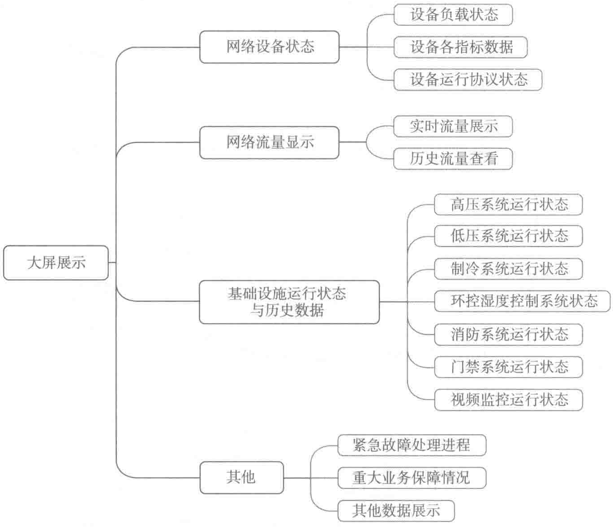

（5）大屏展示模块功能
通过该模块可以动态的展示机房内重要设备的关键参数，实时直观地显示各系统设备的运行数据、运行状态、机房内的情况、各子系统相关拓扑图。大屏幕展示模块构成如图10-62所示。

京东集团华东数据中心是京东技术转型的一个全新尝试。从它目前运营的稳定情况来看无疑是成功的。这是一个可贵的开始，意味着京东厚积薄发的技术实力得到了实践的验证，也为今后京东在数据中心行业的探索和技术创新增强了信心。
PDF第324页 · 已逐页校对
（5）大屏展示模块功能
通过该模块可以动态的展示机房内重要设备的关键参数，实时直观地显示各系统设备的运行数据、运行状态、机房内的情况、各子系统相关拓扑图。大屏幕展示模块构成如图10-62所示。

京东集团华东数据中心是京东技术转型的一个全新尝试。从它目前运营的稳定情况来看无疑是成功的。这是一个可贵的开始，意味着京东厚积薄发的技术实力得到了实践的验证，也为今后京东在数据中心行业的探索和技术创新增强了信心。